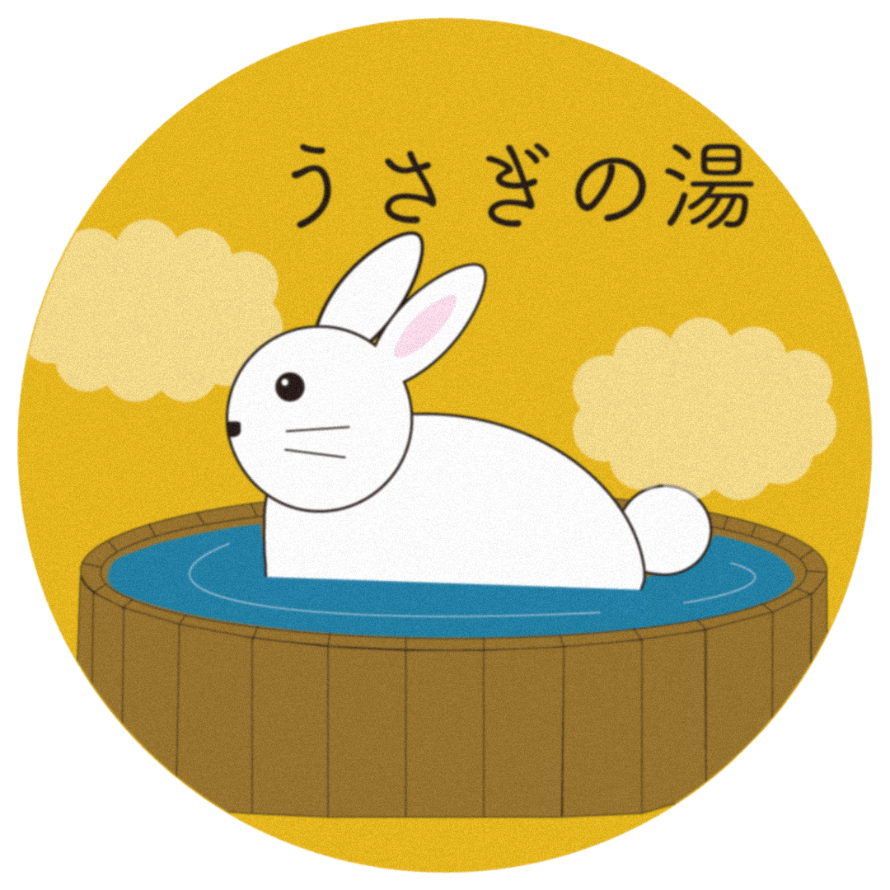

今月のお風呂
ウサギの湯について
施設紹介
店舗情報
あなたにおすすめの銭湯は？
診断を始める
質問1：最近のあなた、どんな感じ？
A. 仕事でヘトヘト。体が重すぎて、もはや石像レベル 🗿
B. 気分はいいけど、なんかスッキリしない…こう、バチッと目覚める何かが欲しい ⚡️
C. やる気はあるけど、寒さ（または暑さ）にやられてる。気温に心が左右されがち 🌦️
D. 人間関係のストレスでモヤモヤ…。もういっそサウナで蒸発したい 💨
残りの質問数: 2
診断結果
もう一度診断する
メインへ戻る